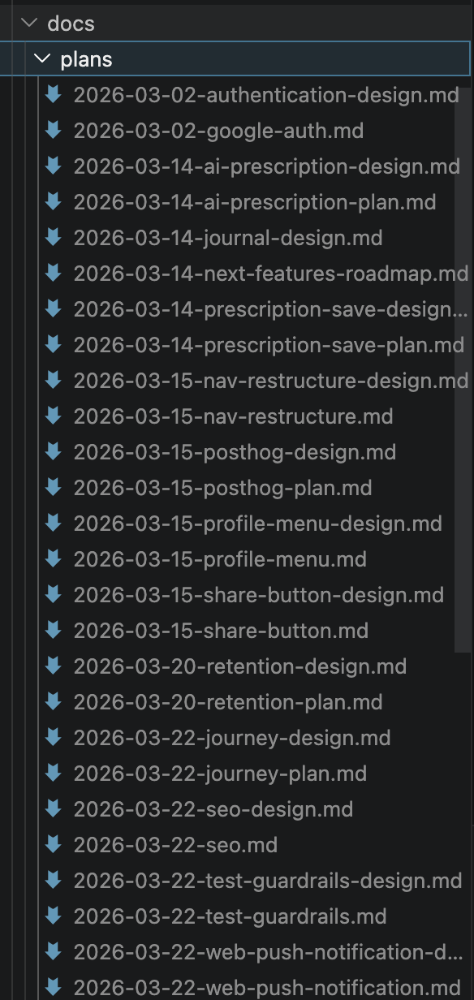

SECTION 02 — 기획
6 / 20
아이디어 발산
Claude와 함께 여러 방향으로 기획 반복. 바이럴 페이지, 리텐션 전략, 비즈니스 모델까지
문서화
SPEC · 사용자 여정 · KPI · 기능 목록을 마크다운으로 정리. 코드보다 먼저 글로 완성
개발 중에도 기획으로
방향이 흔들리면 문서로 돌아와 다시 잡음. 기획 = 나침반
KEY INSIGHT
"만들기 전에 충분히생각하면코드가 단순해진다"
실제 플랜 파일 목록
